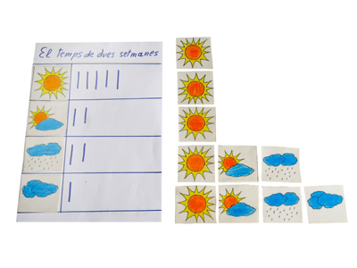

Descripción: Se trata de tarjetas que representan el tiempo que hace cada día y de una tabla en la cual deben colocarse las tarjetas.
Utilidad: Construir con los materiales un primer gráfico estadístico de barras, el cual por su gran simplicidad hace que los alumnos comprendan desde pequeños este medio de representar algo real, propio de ellos mismos o del entorno inmediato.
Nivel: Final del parvulario y ciclo inicial de primaria.
Procedencia: GAMAR
Fuente: GAMAR - PL-ED-02 |
 |